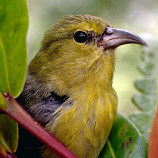

Joe Kolowski, Ph.D.

In this module, you will import point transect data on individual Amakihi (Hemignathus virens), a common type of honeycreeper in Hawaii. These data were collected as part of a larger translocation experiment, where data was collected on a suite of bird species (Fancy et al. 1997). Point transect surveys were performed at seven survey periods between July 1992 and April 1995. There were 41 point-count stations, though they were not all surveyed in some survey periods. We’ll be using this as an example where the use of covariates is appropriate. There are 3 potential covariates available in this case study: Observer ID (OBs), and time in minutes (MAS) and hours (HAS) after sunrise for observations. The goal of the project is to calculate the most unbiased and precise estimate of density of this species within each study period. The study is used as an illustrative example in Marques et al. (2007), and this is one of the Sample Projects provided with the program DISTANCE.
library(Distance)STEP1: Let’s first bring in the data, which exists as a .csv file called “amakihi.csv”
library(Distance)
amakihiData <- read.csv("https://www.dropbox.com/s/9b4mgh36p7p1ynx/amakihi.csv?dl=1")STEP2: As always, you should begin by exploring the raw data. Use functions to view the data, look at its structure, and summarize the data.
Q1. What is the maximum distance at which a bird was observed?
Note that our observer covariate is already recognized as a factor in R, which is what we want. Hours after sunrise could be treated either as a factor, if we want each hour to exist as an independent sample, or we could leave it as is, and its relationship with distance will be assessed in a linear fashion (i.e. detection function parameters will consistently increase or decrease with hour after sunrise).
STEP3: Plot the distance data as a histogram, trying a range of different bin sizes to explore the raw data.
Q2. Do you see any potential problems or issues with the data? If so what are they?
STEP4: Looking at the data with different bin sizes, decide on a reasonable truncation distance or %.
Q3. What did you decide and why?
Let’s now look at our 3 covariates to see how they relate to observed distances. Boxplots are best in this case for factor covariates, regular scatterplots for continuous variables.
STEP5: Create boxplots or scatterplots of our 3 covariates, with distance on the y axes, to look at how these covariates may influence the detection function.
Q4: Which observer tends to observe birds at the longer distances?
Q5: Do observation distances tend to increase or decrease as time after sunrise increases?
Note that we are entertaining three possible covariates in our detection function: observer, hours and minutes since sunrise. Observer and hours are variables that take on values between 1 and 3 in the case of observer, and 1 to 6 in the case of hours. However minutes can take on values from -9 (detections before sunrise) to >300. The disparity in scales of measure between MAS and the other candidate covariates can lead to difficulties in the performance of the optimiser fitting the detection functions in R. The solution to the difficulty is to scale MAS such that it is on a scale (~1 to 5) comparable with the other covariates.
Dividing all the MAS measurements by the standard deviation of those measurements accomplishes the desired compaction of the range of the MAS covariate without changing the shape of the distribution of MAS values. Execute the following code to do this.
amakihiData$MAS <- amakihiData$MAS / sd(amakihiData$MAS, na.rm = TRUE)It’s always good practice to begin with a basic analysis of your data as a starting point, even if we know we want to explore various covariates.
STEP6: Using your selected truncation amount, run the 4 common detection function models on this data set, with no covariates. These include: Half-normal cosine, Half-normal hermite, Hazard-rate simply polynomial, and Uniform cosine. Compare the AIC values of these 4 models.
Remember that you need to think about conversion units here. We want our output to be in hectares (100m by 100m) but our distance units are in meters. Be sure to select an appropriate value for the convert.units argument.
Q6: Based on AIC values, which of these 4 models best fits the data?
STEP7: Look at the summary results of your best model. Then plot the results of the best model to look at the fit of the detection function.
Q7: Do you see any issues with the detection function?
Let’s try now to incorporate our 3 covariates into our modeling. We cannot assume that our best model from above will continue to be the best detection function, so we need to investigate not only different combinations of our covariates, but also different key functions. In R, due to it’s optimization engine, models with covariates and adjustment terms do not converge. Thus, the package prevents us from using adjustment terms. This simplifies things here, but is a disadvantage of running these models in R vs. the Windows program DISTANCE.
In any case, let’s first convert HAS to a factor covariate, since the graph of this variable indicates the trend in detection frequencies may not be linear as hours proceed from sunrise.
amakihiData$HAS <- as.factor(amakihiData$HAS)
STEP8: Test the following models. Combining them with the 4 models we’ve run above for a total of 14 models, compare them with AIC, as well as the Cramer von-Mises test (using the summarize_ds_models function).
Q8: Which model is best and why?
STEP9:Review the summary results of your best model.
Q9: What is the final overall density estimate, per hectare, from your best model? Include the coefficient of variation, and the confidence interval.
STEP10: Use the ddf.gof function to calculate various diagnostics for your best model. Using code from the demo, plot the QQplot and include the Cramer von-Mises test results on the plot
Q10: Do you see any reason to be cautious about our final model here, or do we have evidence that this is a reasonably good fit of the data?
STEP11: Let’s graph our detection functions for each observer. Look in the help menu for the function plot.ds and figure out how to use the subset argument to graph the detection function for each of the three observers separately. Label the main titles with the names of the observers, and set their y axes to go from 0 to 1.5 so we can compare them easily. For some reason the PDF =T does not work in these graphs, so you can graph the standard detection functions here (that is, use the default graph).
Look again at the summary of your best model and focus on the encounter rate (ER) for each survey time period. Remember that we have 7 different survey periods during which field data was collected. You’ll see that the encounter rate varies quite a bit across these survey periods. In all the analyses above, we’ve created pooled detection functions across all these survey periods, assuming that detection processes were more or less similar across these periods. But this may not be the case. For example encounter rates in December 1992 and July 1992 were substantially lower than during other periods. Using the demo exercise (House Wren) as a guide, where survey blocks were analyzed as separate strata, analyze the Amakihi data again, this time keeping each survey period as a separate strata. For simplicity, try only the half-normal cosine, and the hazard rate simple polynomial models for each survey period. In the end, sum the AIC values of your final 7 models (one for each survey period) and compare with the AIC value of our initial model above which pooled these survey periods (half-normal cosine, no covariates) to see if it is worth estimating separate detection functions for each survey period. Think about how you might go about calculating a final global density estimate when each survey period is analyzed separately like this.